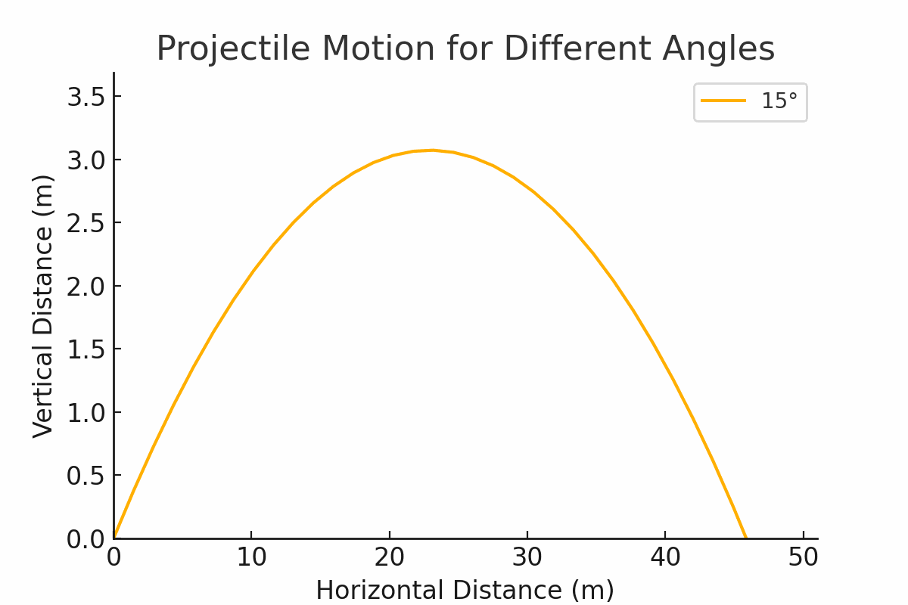

Problem 1
Investigating the Range as a Function of the Angle of Projection

Equations of Motion
- Horizontal displacement: $$ x(t) = v_0 \cos(\theta) t $$
- Vertical displacement: $$ y(t) = v_0 \sin(\theta) t - \frac{1}{2} g t^2 $$
To find the range \( R \), we determine the time of flight \( T_f \): $$ T_f = \frac{2 v_0 \sin(\theta)}{g} $$
Substituting into the horizontal displacement: $$ R = \frac{v_0^2 \sin(2\theta)}{g} $$
2. Analysis of the Range
- The maximum range occurs at \( \theta = 45^\circ \), yielding: $$ R_{\max} = \frac{v_0^2}{g} $$
- Gravity Influence: Lower gravity increases range (e.g., Moon vs. Earth).
- Velocity Impact: Higher velocity increases range quadratically.
3. Practical Applications
- Sports: Ball trajectories in football and golf.
- Engineering: Optimizing projectile launch angles.
- Astrophysics: Calculating satellite orbits and probes.
4. Implementation
The following Python script simulates projectile range across different angles, velocities, and gravity values.
import numpy as np
import matplotlib.pyplot as plt
import pygame
import math
def projectile_range(theta, v0, g=9.81):
"""Computes the range of a projectile given initial velocity and launch angle."""
theta_rad = np.radians(theta)
return (v0 ** 2 * np.sin(2 * theta_rad)) / g
# Simulation parameters
angles = np.linspace(0, 90, 100)
v0_values = [10, 20, 30] # Different initial velocities
g_values = [9.81, 1.62, 24.79] # Earth, Moon, Jupiter
# Plot results
plt.figure(figsize=(10, 6))
for v0 in v0_values:
ranges = [projectile_range(theta, v0) for theta in angles]
plt.plot(angles, ranges, label=f'v0 = {v0} m/s (Earth)')
plt.xlabel('Launch Angle (degrees)')
plt.ylabel('Range (m)')
plt.title('Projectile Range as a Function of Angle')
plt.legend()
plt.grid()
plt.show()
# Live Interactive Simulation with Pygame
def live_simulation():
pygame.init()
screen = pygame.display.set_mode((800, 600))
pygame.display.set_caption("Interactive Projectile Motion")
clock = pygame.time.Clock()
font = pygame.font.Font(None, 36)
v0 = 50 # Initial velocity
angle = 45 # Launch angle in degrees
g = 9.81 # Gravity
dt = 0.1 # Time step
running = True
while running:
screen.fill((0, 0, 0))
for event in pygame.event.get():
if event.type == pygame.QUIT:
running = False
elif event.type == pygame.KEYDOWN:
if event.key == pygame.K_UP:
angle = min(angle + 5, 90)
elif event.key == pygame.K_DOWN:
angle = max(angle - 5, 0)
elif event.key == pygame.K_RIGHT:
v0 += 5
elif event.key == pygame.K_LEFT:
v0 = max(v0 - 5, 5)
x, y = 50, 500 # Initial position
vx = v0 * math.cos(math.radians(angle))
vy = -v0 * math.sin(math.radians(angle))
while y < 500:
pygame.draw.circle(screen, (255, 0, 0), (int(x), int(y)), 5)
pygame.display.flip()
x += vx * dt
vy += g * dt
y += vy * dt
clock.tick(60)
angle_text = font.render(f"Angle: {angle}°", True, (255, 255, 255))
v0_text = font.render(f"Velocity: {v0} m/s", True, (255, 255, 255))
screen.blit(angle_text, (10, 10))
screen.blit(v0_text, (10, 40))
pygame.display.flip()
pygame.quit()
if __name__ == "__main__":
live_simulation()
5. Limitations and Future Work
- No Air Resistance: Real-world projectiles experience drag.
- Uneven Terrain: Actual launch sites may not be level.
- Wind Effects: Wind can significantly alter trajectories.
Future Enhancements
- Incorporate drag and wind resistance.
- Extend to 3D simulations with varying wind conditions.
- Use numerical methods like Runge-Kutta for complex cases.